Progressive overload planner for iPhone, iPad, Mac and Apple Watch
Train in phases. Progress every cycle.
TrainingPlanner turns a training plan into a workout you can follow, set by set,
and helps your weights and reps go up over time, with an AI coach that runs on your own iPhone,
iPad and Mac.
Any lengthA cycle is as long as you train it, not just a week
Hundredsof exercises, each with step-by-step instructions
Local AIA coach on your iPhone, iPad and Mac, with Apple
Intelligence; it sends nothing off them
kg or lbWeights in kg or lb, distances in km or miles
In motion
See it move
Ten short clips, filmed in the app as it is: one session from Today to the next cycle, then
the calendar, the body, the board and the medals. No sound.
The session to do, how recovered you are and last night's readiness.
One app and one plan, kept in sync through your private iCloud. Plan on the big screen, train
from the phone in your pocket, log sets from the wrist. Your gym, your plates and your weekly
set ranges follow you from one to the next.
iPadThe tabs become a sidebar and the day lays out wide, on
every iPad from the mini to the 13-inch Pro.
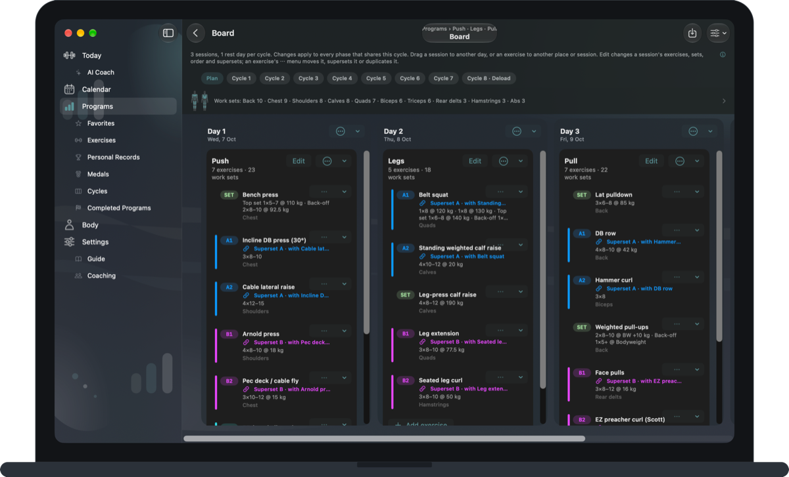
MacPlan the cycle on the board in a proper Mac window: the days
side by side, exercises dragged where they go, and the calendar and every workout's review a
click away. In a workout, ⌘↩ starts the next set and ⌘. skips the rest.
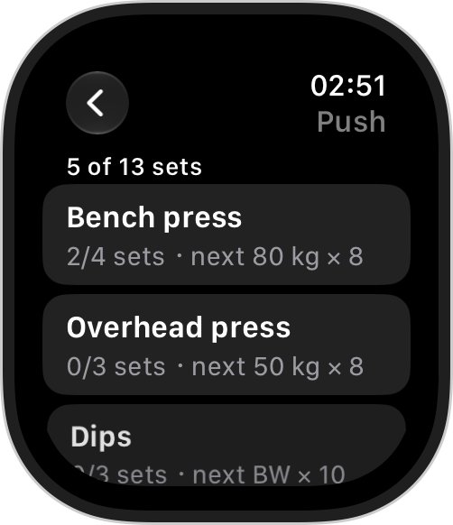
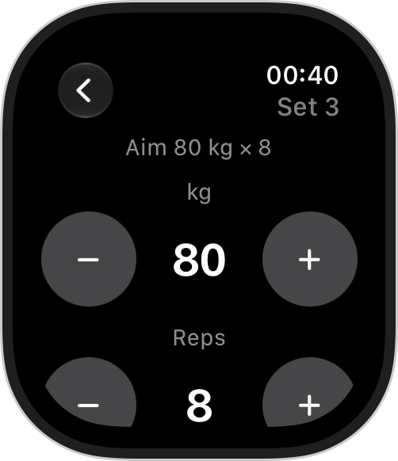
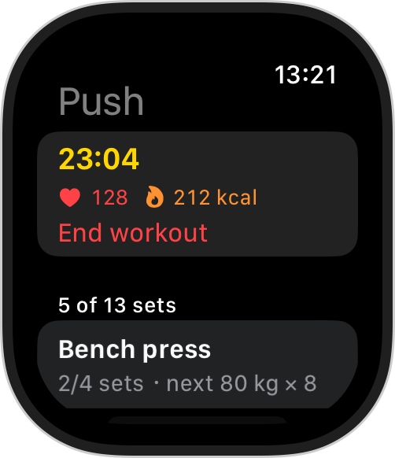
Apple WatchToday's workout on the wrist: log every set, turn
the crown for the weight, and the rest timer taps you when it's time. Start the workout on the
watch and it records your heart rate and calories, saved to Health and counted toward your
rings.
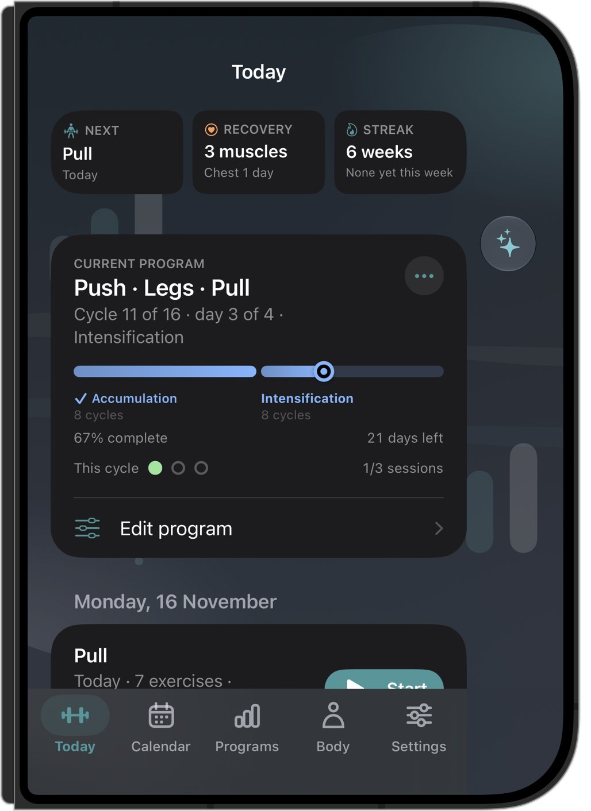
iPhone DuoFolded, the phone you know. Unfolded, the sidebar
opens beside your session, like on the iPad.
AI coach, on the device
A local AI coach on your iPhone, iPad and Mac
The coach is an AI agent that runs on your own devices with Apple Intelligence. It looks up
your plan, your sets and your recovery itself, answers in plain words, and offers changes you
accept with a tap. It sends nothing off the device, so it needs no account and no signal.
Mid-workout, ask about the exercise you're on. Pushed the bench to 100 kg for 9 with nothing
left in reserve? The app starts your next set 5 % lighter and says why, and the coach backs
it: "Take the next set at 95kg×8, aiming for 2 RIR."
Ask what to train today, and it checks how recovered each muscle is and names the session
that fits.
Ask for a change, and it makes the offer: adjust or swap an exercise, write the next cycle,
design a program, or log the sets you describe. Nothing changes until you accept it.
Part of TrainingPlanner Pro, on devices with Apple Intelligence.
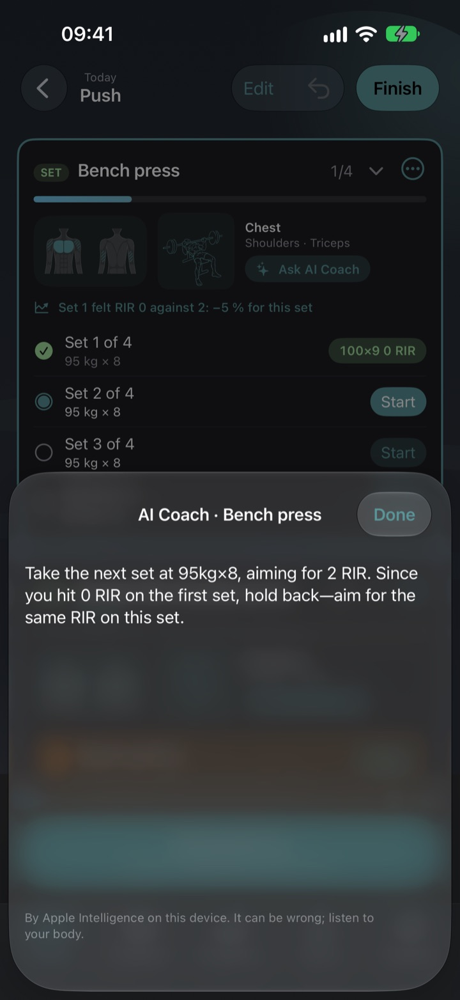
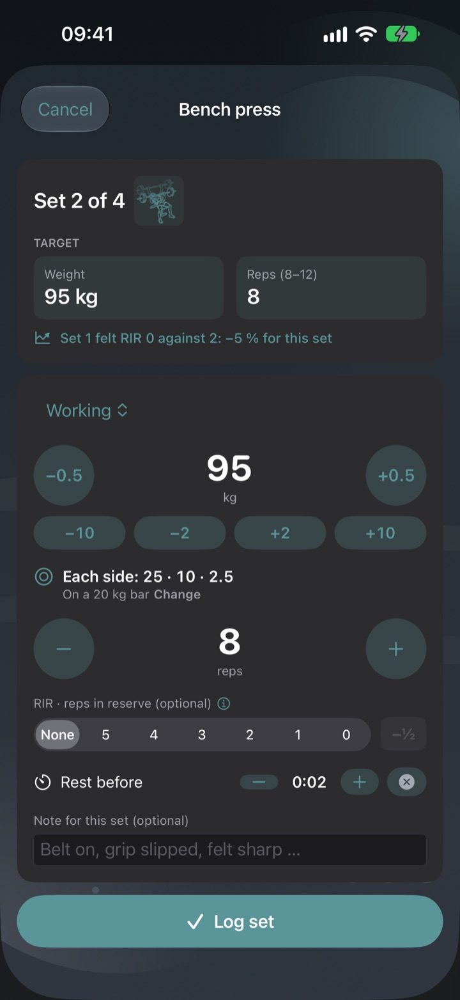
Phone and watch, together
Train with both at once
Start the workout on whichever is nearer. The phone shows the whole session: every set with
last time's numbers, the plates per side and the warm-up ramp. The watch shows the set to do.
Log it on the wrist and it appears on the phone; log it on the phone and the watch moves on
to the next.
The rest timer counts down on both, and the watch taps you when it's time.
Phone in the locker, or at home? The watch has today's workout and the next one: start
it, log it and finish it on the wrist, and it's all on the phone once it's back in reach.
A complication for your watch face and the Smart Stack: today's session with its sets
done, or what's next on a rest day.
Start the workout on the watch and it records your heart rate and calories: saved to
Health, counted toward your rings and shown with that workout. The phone shows your
heart rate while it does.
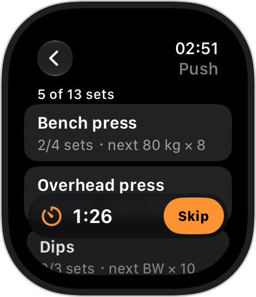
How it works
Plan it once. Train it. Watch the next cycle write itself.
1
Plan on a board
Lay out your training cycle day by day. Drag sessions to the days you train, add exercises
from a library of hundreds, and set the sets, reps, rest and weight for each.
Supersets, rep ranges, timed holds and cardio are built in.
Start from scratch or from a template, and keep what works as a cycle of your own.
The board counts the work sets per muscle, so you see what a cycle leaves out.
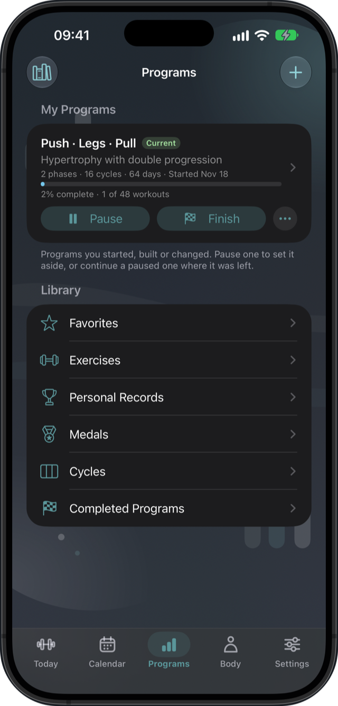
2
Train without thinking about it
Today shows the session to do and starts it with one tap. Every set starts from what you
lifted last time; log it in a pop-up, and the rest timer runs by itself.
The first set shows a warm-up ramp beside the weight, and the plates for each side.
Beat last time: each set shows what you did before and how this one compares.
A set that beats your best is marked with a trophy as you log it.
3
Progress every cycle
After each workout you see what improved and what to aim for next time, and you can share it
as one picture. When a cycle ends, the next one is prescribed from what you logged: up where
every rep was done, repeated where reps were missed. That's
progressive overload, planned for you.
Linear, double progression or RPE-based, for the
whole program or per exercise.
Say how the pump, the workload and the soreness were after an exercise, and its sets in
the next cycle follow.
Every change is explained, and you accept, adjust or keep the plan as it was.
When effort climbs while the lifts fall back, Today suggests a deload.
Features
Everything a training log should do, and a few things it should have done long ago.
Going in three screens
Say what you're after and how often you train, and pick the program that fits. Check the
cycle, name it, and your first workout is on Today.
Too tired? Change day
Train another session today, swap with another day, move only this one, push everything
later or skip it. You see what moves before it does.
Readiness, from your sleep and heart
Last night's heart rate variability, resting heart rate and sleep from Apple Health, against
your own last four weeks, as one score with its reasons. Any watch, ring or band whose app
writes to Health will do. Your training load, with other apps' runs and rides counted in,
says whether fatigue is building.
Today's plan, adjusted to today
A low night holds the squats and deadlifts at last time's weights and leaves the curls alone; a
muscle still recovering loses a set; a set that felt far too hard eases the next one. One tap
trains as planned.
Recovery, muscle by muscle
A body figure on Today glows warm where last week's sets still weigh and cools as each
muscle recovers. Tell it how you feel, and the estimate learns how fast you bounce back.
Medals for the milestones
Your hundredth workout, weeks in a row, tonnes lifted, records set, programs finished. Cards
worked out from what you already logged, each with the day you earned it, ready to share.
More than thirty programs to start from
From a first full-body plan to push, pull, legs, upper and lower splits, a six-day
high-frequency plan and advanced blocks, free of anyone's trademark, ready to follow or to
make your own. Star what you like, and your favorite programs, cycles and exercises gather in
one place.
Every exercise explained
Hundreds of exercises with step-by-step instructions and, for most, a drawing of the movement
from start to finish. The muscles each one trains on a figure, a video demo a tap away, and
how you've trained it over time.
Personal records
Heaviest weight, best estimated one-rep max, most reps at a weight, longest hold. Each
exercise keeps its records with the day they were set.
Your weeks and your streak
This week's workouts, sets and volume above the calendar, a bar for each of the last twelve
weeks, and hard sets per muscle against your weekly range.
Track your body too
Body weight, body fat, tape measurements and progress photos, each with its trend, and a
before and after for every program. InBody scans import with their muscle mass, fat mass and
body water.
Pro
Periodization in plain words
Linear, block, undulating, pendulum and more. Each model says what every phase gets in sets,
reps and load from your one-rep max, and tells you whether your cycles follow it.
Pro
A coach that knows your day
Ask "What should I train today?", or mid-workout what to do with the next set. The coach runs
on your device with Apple Intelligence, sees your session, your recovery and your records, and
can prescribe the next cycle for you.
Pro
Siri and Shortcuts
"Start my workout in TrainingPlanner" opens today's session ready to log. Ask what's planned
or how recovered you are, and put any action on the Action button.
Switching from Hevy or Strong?
Import the CSV they export and every workout comes in with its exercises and sets. Your
records, last-time comparisons, weeks and streak carry on from day one.
Work with a trainer
Send your trainer a report of your training and take the programs and adjustments they send
back, as files, through whatever app you already share with.
Train the way you train
Pyramids, drop sets, rest-pause and myo-reps. Freestyle workouts when there is no plan, and
any logged workout can be trained again.
On your Home Screen
A widget with today's session and your program's progress, the rest timer as a Live Activity,
and a plate calculator for barbell lifts.
Screens
Straight from the app
Scroll sideways. Dark here; the app follows your device's look, with light and dark themes.
Log every set in seconds
One tap per set, starting from last time.
See how it went
Sets, effort and the muscles trained, against the last cycle.
Too tired? Change day
Swap, move, push or skip, and see what changes first.
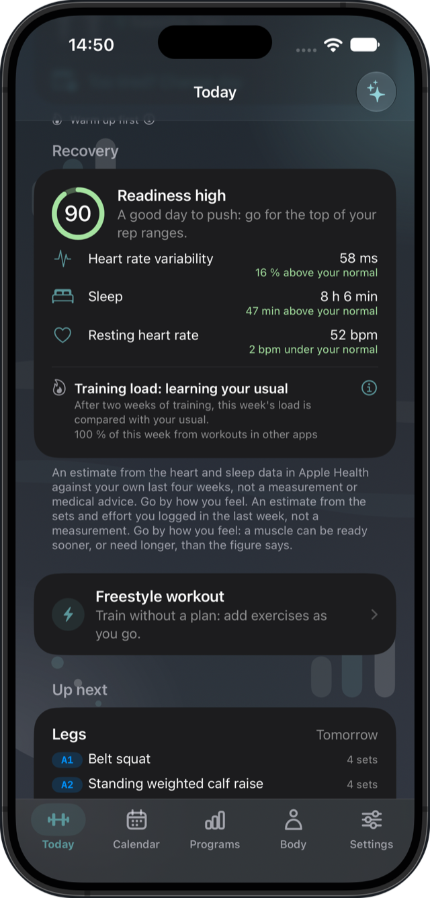
Know when to push
Readiness from your sleep and heart data, and your training load.
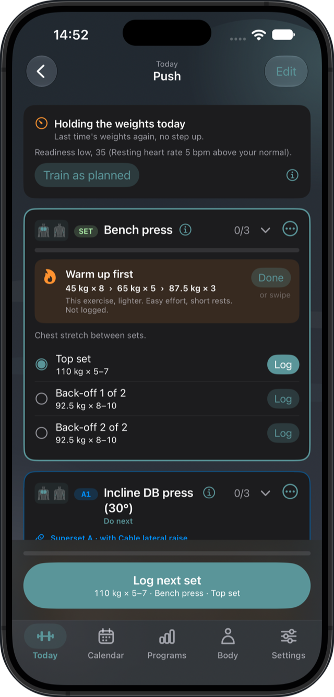
Adjusted to today
A low day holds the big lifts; one tap trains as planned.
Your gym, your plates
Say what you have and every suggestion fits it.
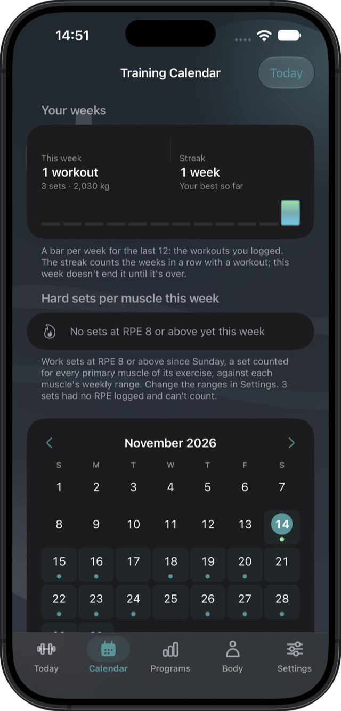
Never miss a session
Your weeks, your streak and the whole history.
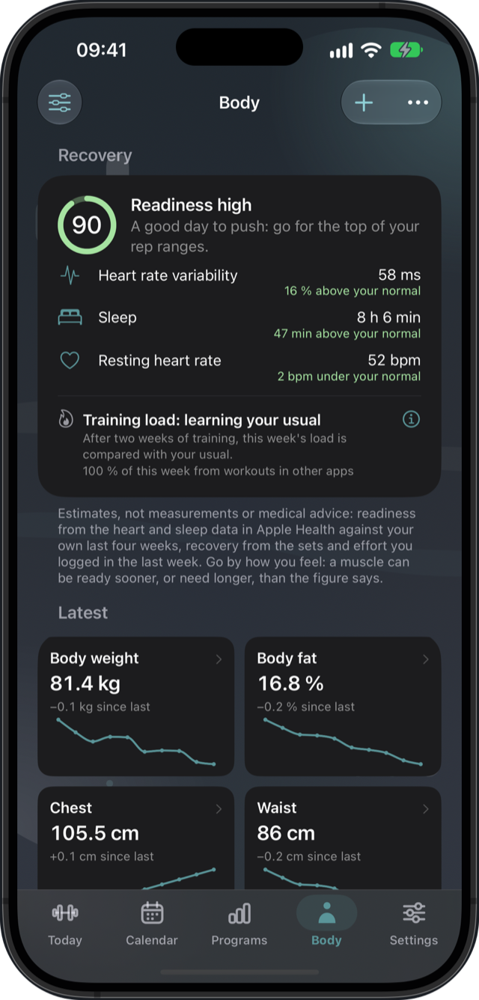
Track your body too
Weight, body fat and measurements, each with its trend.
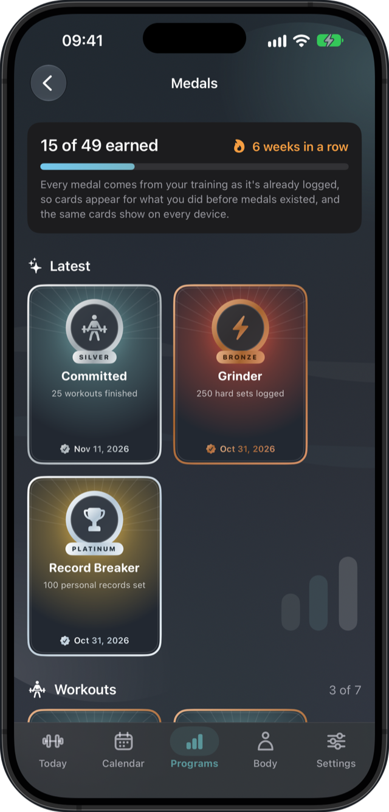
Medals for the milestones
Earned from what you logged, dated, yours to share.
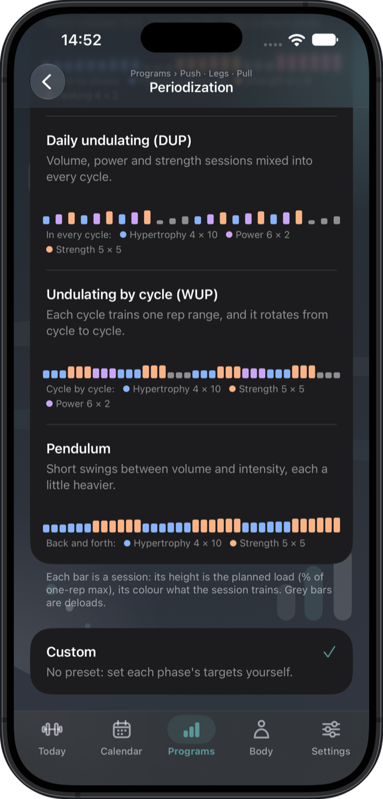
Periodize like a coach
Each model with its load curve, session by session.
Programs that adapt to you
Pause, continue, finish, and start the next one.
Today, at a glance
The next session, how recovered you are, your streak.
Privacy
Your data stays yours.
There is no server behind this app:
no accounts, no ads, no analytics, no third-party code. It tracks your training, for you, and
nobody else gets to see it. The App Store privacy label reads "Data Not Collected", and it means
it.
Kept on your devicesand in your private iCloud, in sync across your
devices. Nothing goes to a server of ours, because there isn't one.
Coaching on the devicewith Apple Intelligence. The app never sends
your plan or your log to a server or to another AI. Ask Siri about your workout and Siri
handles that request: see the privacy policy.
Apple Health, if you want itFinished workouts, body weight, body fat
and waist can be saved to Health. Only if you turn on readiness does the app read anything:
your heart rate variability, resting heart rate, sleep and other apps' workouts, worked out
on the device and kept there, never synced or sent. The watch records the workouts you start
on it, and the app reads their heart rate and calories back from Health to show them: on
the device, never in iCloud.
Private iCloud, or noneSync runs through your own iCloud account,
which only you can read. Turn it off and the app lives on one device.
Yours to take alongBack up everything to one file you keep: programs,
every workout, body entries and photos, settings. Restore it on any device, or move to another
account with it. CSV export and import too.
Free and Pro
Start free. Go Pro when your training gets structured.
The free app is a complete training log. Pro is for plans with phases, deloads and automatic
progression.
Free
Forever
One repeating plan, with everything you need to follow it.
Full logging with the rest timer, alerts and the screen kept on
Every set starts from last time's weight and reps
Straight sets, rep ranges, holds, cardio and supersets
Personal records, workout notes, your weeks and streak
Calendar with the whole history, Apple Health and iCloud sync
Exercise library with guides, beginner templates
Change day, freestyle workouts, train any workout again
Import from Hevy or Strong, Siri and Shortcuts
Your equipment and plates, training load from your logs, and today's adjustment for muscles
still recovering
Apple Watch app: log sets from the wrist, record the workout with heart rate, and see the
day on your watch face
Home Screen widget, the rest timer as a Live Activity, and the plates for the bar
Send your trainer a report and take the plans they send back
TrainingPlanner Pro
Everything in Free, plus
For structured training, and for the next cycle to write itself.
Structured plans: phases, deloads and as many cycles as you like
Automatic progression: linear, double progression and RPE-based, with the next cycle
suggested from what you logged
Periodization: linear, undulating, block and more, with loads from your 1RM, or automatic
from your goal, experience and length
Readiness from your sleep and heart data in Apple Health, other apps' workouts in your
training load, today's adjustment from it, and the Readiness widget
Pyramids, drop sets, rest-pause and myo-reps
Intermediate and advanced templates, and unlimited programs and cycles
Workout insights: each exercise and each muscle against the last cycle, full strength
history and estimated 1RM charts
Body tracking with progress photos, InBody scans and a before and after for each
program
The on-device coach and program designer with Apple Intelligence
Trainer mode: keep your clients' reports and send them programs and adjustments
Every theme
Monthly
CHF 5.00 / month
Cancel any time.
2 months free
Yearly
CHF 50.00 / year
About CHF 4.17 a month.
Prices in Swiss francs; the App Store shows your country's. One subscription
is Pro on your iPhone, iPad and Mac. Gym members can redeem their gym's code for the member
price. Subscriptions are charged to your Apple Account and
renew automatically unless cancelled at least 24 hours before the period ends; manage or cancel
any time in your App Store settings.
Terms of Use
· Privacy Policy
Questions
Before you download
Is TrainingPlanner free?
Yes. The free app follows one repeating plan with full logging, the rest timer, the calendar,
personal records, Apple Health, iCloud sync and the beginner templates, with no time limit.
Pro unlocks structured plans with phases and deloads, automatic progression and the rest of
the Pro list above.
Which devices does it run on?
Any iPhone or iPad on iOS 18.2 or later, including the iPhone Duo, and any Apple silicon Mac
on macOS 26. The Apple Watch app comes with the iPhone app and needs watchOS 11. The coach and
program designer use Apple Intelligence, so they need a device that supports it; everything
else works everywhere the app runs.
What does the AI coach do, and where does my data go?
Nowhere: the coach is an AI agent that runs on your iPhone, iPad or Mac with Apple Intelligence,
so it never sends your plan or your log off the device, and it works offline. It looks up your
plan, sets, records and recovery itself, says what to train today, and mid-workout gives you a
tip for the next set, backing the lighter set the app starts after one that was far too hard.
Ask for a change and it offers one (an exercise adjusted or swapped, the next cycle, a new
program, the sets you describe), and nothing changes until you accept it. The coach is part of
Pro and needs a device that supports Apple Intelligence. Siri is different: ask Siri about your
workout, and Siri handles your request and the app's answer under Apple's rules, as our
privacy policy explains.
Do I need an Apple Watch?
No. Everything works from the iPhone alone; the Apple Watch app is a companion for logging
from the wrist and recording the workout. Readiness reads your heart rate variability, resting
heart rate and sleep from Apple Health, so any watch, ring or band whose app writes them to
Health feeds it just the same.
Do I need an account or an internet connection?
Neither. There are no accounts. Your training is kept on your device and, if you're signed in
to iCloud, in your private iCloud database so it syncs to your other devices. Logging,
planning and Pro all work offline.
Can I bring my history from another app?
Yes. Import the CSV that Hevy or Strong exports, and every workout comes in with its exercises
and sets. Your records, last-time comparisons, weeks, streak and recovery estimate carry on
from day one. Importing the same file twice adds nothing.
What if I miss a day?
Open Change day. Train another session today, swap with another day, move only this session,
push everything later or skip it on purpose. The sheet shows what moves before you apply it,
and the plan keeps its order.
I train with a coach. Does that work?
Yes. Send your trainer a report of your training as a file, through AirDrop, Messages or Mail,
and take the programs and adjustments they send back. Trainers keep their clients' reports in
trainer mode, which is part of Pro.
Does Pro cover all my devices?
Yes. It is one app on one App Store record, so a subscription bought on the iPhone is Pro on
your iPad and your Mac too, under the same Apple Account. The Apple Watch app is free with the
iPhone app.
How do I cancel Pro?
In your App Store subscription settings, at any time. Pro stays on until the end of the period
you paid for, and your programs and workouts are always kept.
From the blog
The training behind the app
The methods TrainingPlanner is built on, explained, with how to set each one up on iPhone, iPad
and Mac. New posts come out one at a time.
Calories, macros and meal plans for iPhone and Apple Watch. Log what you eat in seconds by
typing or speaking, keep your calories and macros in view, and see your progress take shape.
Your data stays on your iPhone and in your own iCloud.